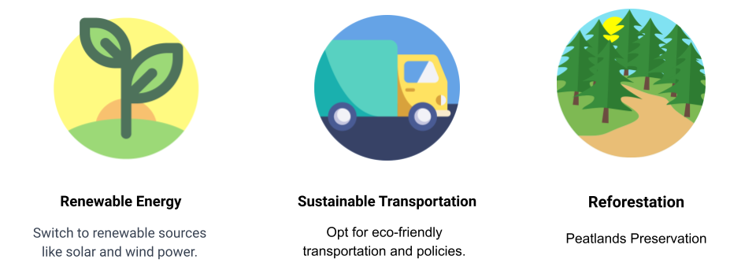

Coffee Shop Sales Data

Keywords: Coffee Sales
Tools Used: Microsoft PowerBI
This is a personal project as part of practice and the dataset will be taken from a public dataset https://www.kaggle.com/datasets/ahmedabbas757/coffee-sales.
Introduction
Transaction records for Maven Roasters, a fictitious coffee shop operating out of three NYC locations. Dataset includes the transaction date, timestamp and location, along with product-level details.
Recommended Analysis:
- How have Maven Roasters sales trended over time?
- Which days of the week tend to be busiest, and why do you think that's the case?
- Which products are sold most and least often? Which drive the most revenue for the business?
Recommendation
Based on the results and discussions, conclusive recommendations were formulated, specifically addressing patterns and trends in CO2 emissions with a focus on Indonesia. These recommendations aimed to tackle potential challenges, promote sustainable practices, and guide future research and policy initiatives. Furthermore, insights from the study, especially those related to Indonesia, were utilized to develop actionable strategies aimed at mitigating the impact of carbon emissions on the environment. 
In summary, the methodology involved a systematic and rigorous process of data collection, cleaning, analysis, observation, and interpretation, with a specific emphasis on Indonesia. This approach ensures the reliability and validity of our study, contributing to a broader understanding of CO2 emissions and their implications, particularly within the Indonesian context.